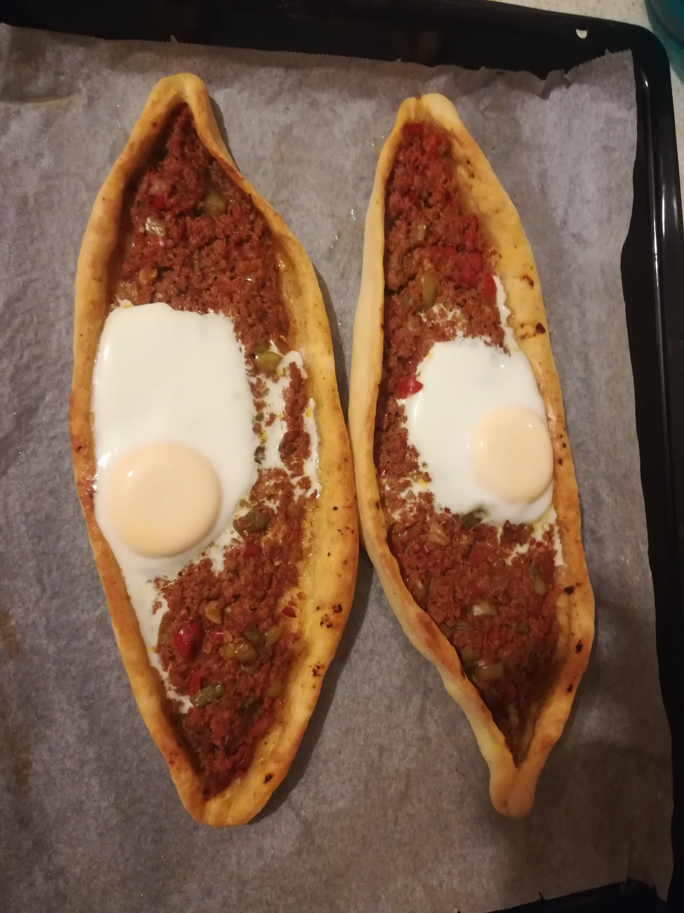
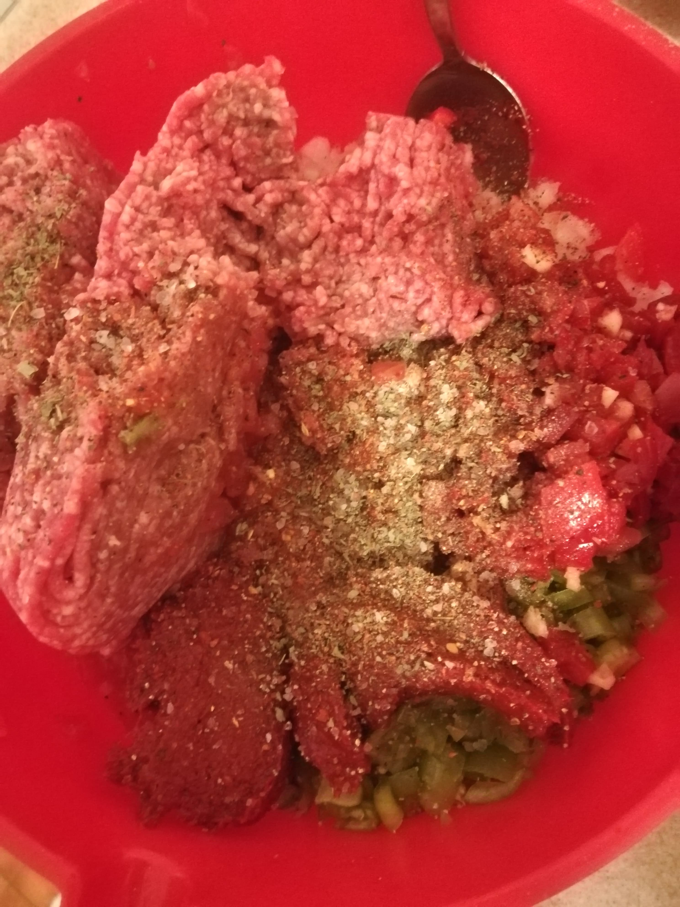
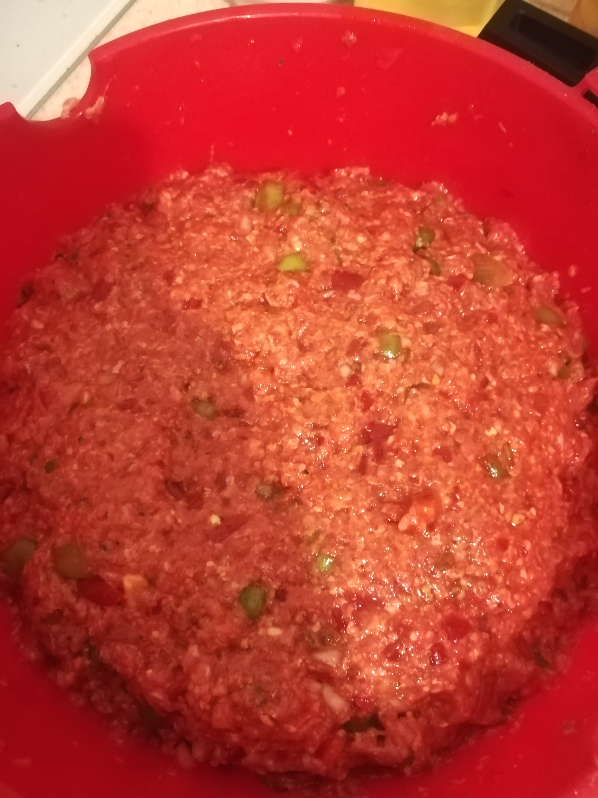
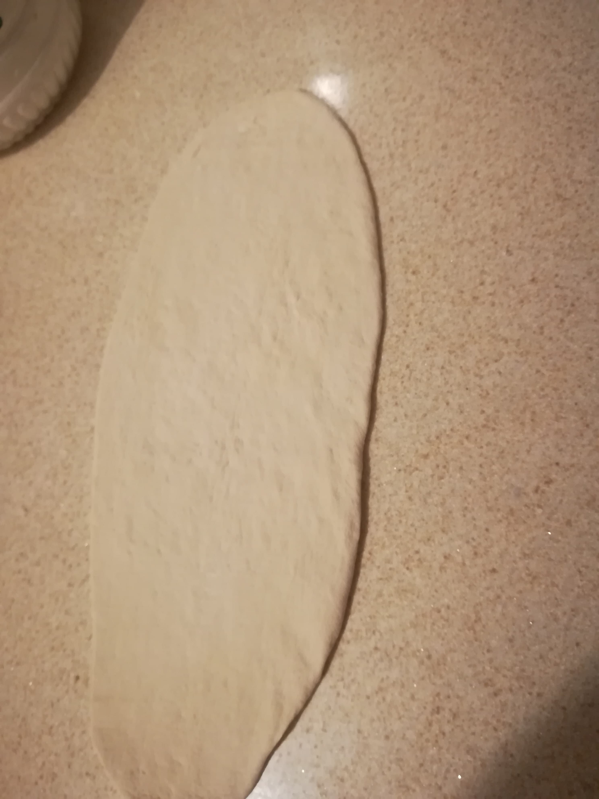
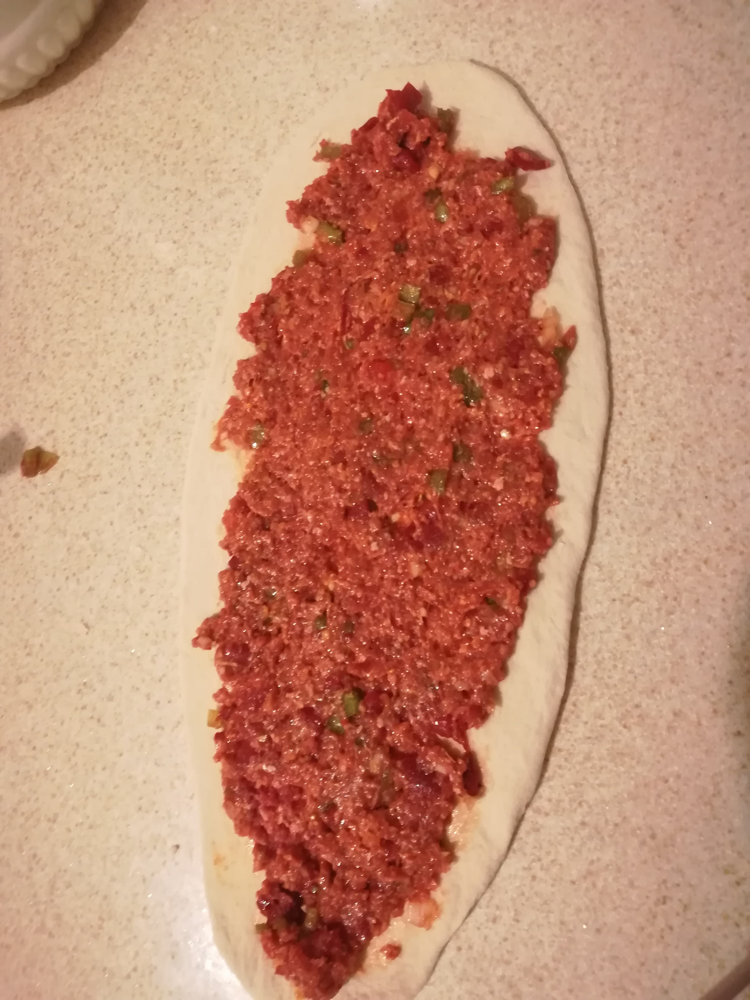
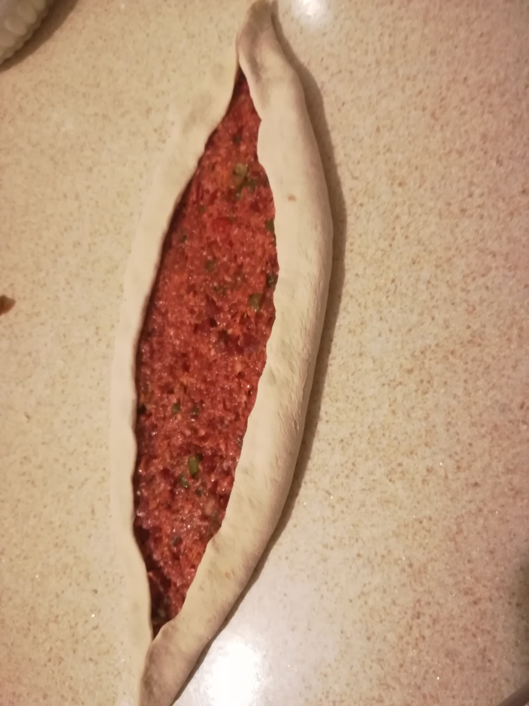
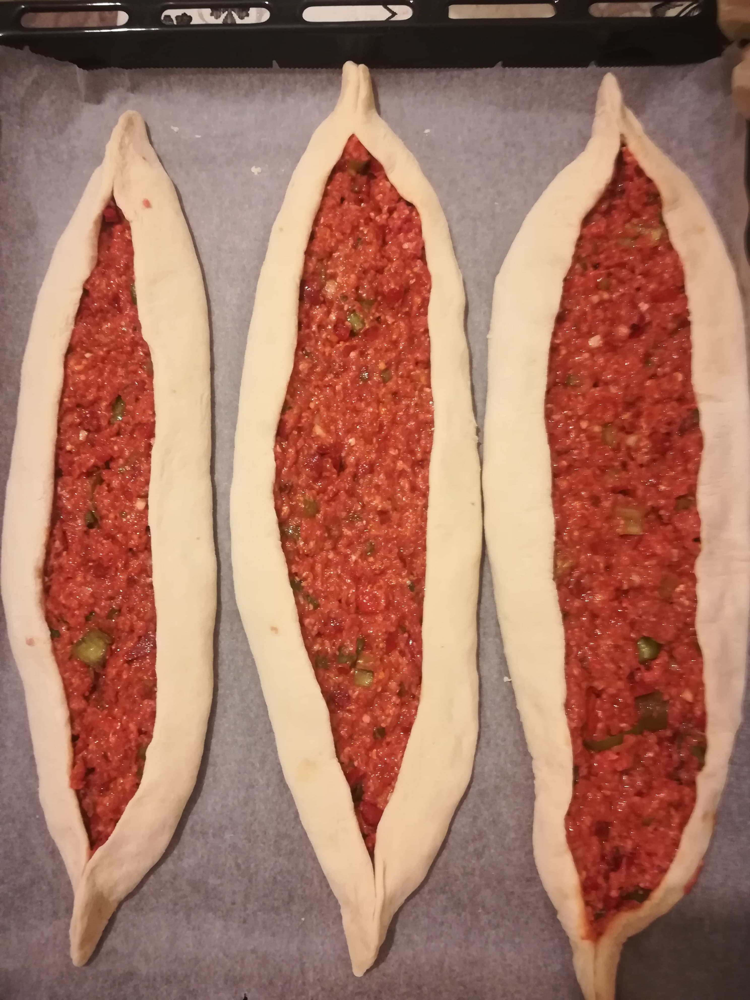

İÇLİ PİDE

Kıymalı severler için içli pide tarifi!
Malzemeler
Hamuru İçin:
- ~5 su bardağı un
- 2 çay kaşığı kuru maya
- 1 çay kaşığı şeker
- 1 tatlı kaşığı tuz
- ~1 su bardağı su
- 1 adet yumurta(üzerine sürmek için)
İç harcı İçin:
- 500 gr kıyma
- 2 adet kapya biber
- 5 adet yeşil biber
- 3 adet domates
- 1 adet kuru soğan
- 5 diş sarımsak
- 1'er tatlı kaşığı domates ve biber salçası
- 1'er tatlı kaşığı kimyon, kaya tuzu ve toz biber
- 1 çay kaşığı karabiber
- Yarım çay bardağı zeytinyağı
- Rendelenmiş kaşar peyniri
Tarif
- Hamurumuzu yoğurup mayalanması için kenara alıyoruz.
- İç harç malzemelerimizi ince ince doğrayıp karıştırıyoruz.


- Hamurumuzu bezeler haline getiriyoruz ve uzun şekilde açıyoruz.

- Fırın tepsimizi hafifçe yağlıyoruz ve fırınımızı en yüksek dereceye alıyoruz.



- iç harcımızı açtığımız hamura yerleştirip fırına dikkatlice
yerleştiriyoruz ve çırpılmış yumurtamızı kenarlarına sürüyoruz.
- Fırından pidemizi çıkarmaya yakın ortasına isteğe bağlı olarak kaşar peyniri
ya da yumurta yerleştiriyoruz.
Afiyet olsun :).